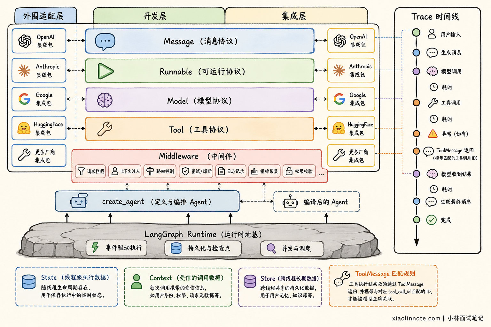
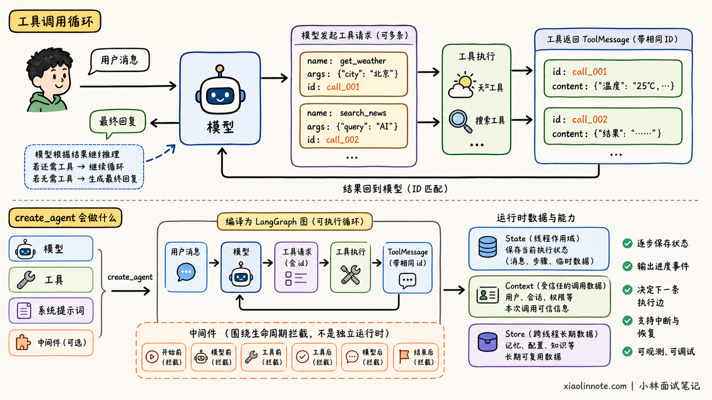
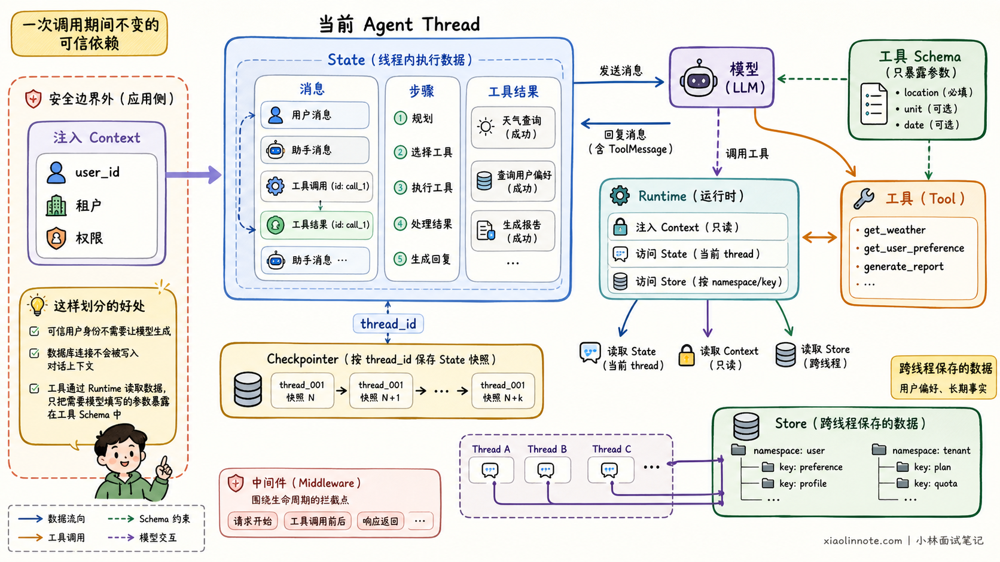
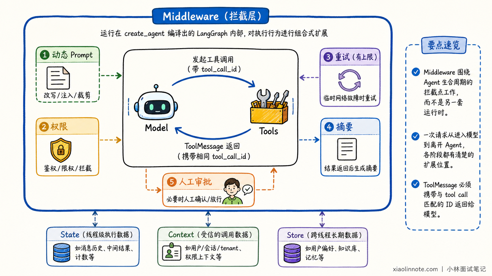

LangChain 的底层架构与实现原理是什么？
👔面试官：你了解 LangChain 吗？说说它的底层架构。
🙋♂️我：LangChain 就是把 Prompt、模型和解析器串成一条 Chain。
👔面试官：这只能解释早期最表面的用法。不同模型如何统一？工具结果怎样回到模型？Agent 的状态和循环又由谁管理？
🙋♂️我：底层应该就是一个 while 循环，模型要调用工具就执行，不调用就退出。
👔面试官：表面行为相似，但生产级 Agent 还需要状态、路由、持久化、中断恢复和人工介入。现在 create_agent 底层运行在 LangGraph 上，不能只理解成普通循环。
🙋♂️我：那我记住 create_agent 底层是 LangGraph，应该就算理解架构了。
👔面试官：还不够。Message、Tool、State、Context、Store 和 Middleware 分别负责什么，它们又怎样协作，才是架构题真正要讲清的内容。
这道题真正考察的是：你能否从一次 Agent 请求出发，讲清楚 LangChain 各层如何协作。
💡 简要回答
当前 LangChain v1 更像一套面向 Agent 的分层开发框架，而不只是将 Prompt 串起来的 Chain 工具。
底层的 langchain-core 定义 Message、Model、Tool 和 Runnable 等标准协议；不同模型厂商的独立集成包负责把自己的请求与响应适配到这些协议，因此应用层可以使用相对统一的方式切换模型和工具。
在执行层，Runnable 统一了组件的同步、异步、批处理和流式调用方式。对于步骤固定的流程，可以使用 LCEL 组合 Prompt、Model 和 Parser；对于需要模型自主选择工具的任务，则使用 create_agent 创建 Agent。
create_agent 会把模型节点和工具节点编译成 LangGraph 状态图。模型读取消息后生成 AIMessage；如果其中包含 tool_calls，运行时执行对应工具，并把结果包装成带相同调用 ID 的 ToolMessage 写回状态；模型再次读取工具结果并继续判断，直到生成最终回答。
在这套架构中，State 保存会变化的消息与业务状态，Runtime 提供可信上下文和长期 Store，Middleware 负责在模型或工具调用前后加入权限、重试、摘要与人工审批，LangGraph 则负责路由、检查点、暂停恢复和长时间运行。
一句话概括：LangChain 用标准协议统一组件，用 create_agent 提供高层 Agent 入口，再由 LangGraph 承担有状态的执行运行时。
📝 详细解析
LangChain 解决了什么？
直接调用一家模型厂商的 SDK 并不困难。真正的问题出现在应用逐渐复杂之后：不同厂商的消息格式、工具调用结构和流式响应各不相同，业务还需要接入 Prompt、工具、状态、重试和追踪。一旦更换模型，大量厂商专属字段可能已经散落在业务代码中。
LangChain 的核心思路是在这些差异之上定义稳定接口。厂商集成负责适配，应用只依赖公共协议，从而让模型、工具和运行时能够相对独立地演进。
架构分成几层？
理解 LangChain v1，可以抓住下面四层：
| 层次 | 主要职责 | 典型对象 |
|---|---|---|
| 核心协议层 | 统一组件的数据结构与调用接口 | Message、Runnable、Model、Tool |
| 集成适配层 | 屏蔽模型、向量库和外部服务差异 | langchain-openai 等独立集成包 |
| Agent 开发层 | 提供高层 Agent 组装与扩展能力 | create_agent、Middleware、Structured Output |
| 编排运行层 | 管理状态、循环、路由、持久化和恢复 | LangGraph Runtime |
可观测性贯穿各层，通过运行事件和 Trace 记录模型调用、工具调用、耗时和异常。

这张图表达的是职责边界，不是严格的单向调用顺序。例如模型和编译后的 Agent 都遵循 Runnable 调用方式，但它们承担的架构角色不同。
核心协议如何统一？
langchain-core 中最值得理解的不是类名数量，而是一条数据如何从用户走到模型，再进入业务系统。
这条链路先需要统一「传什么」。HumanMessage 表示用户输入，AIMessage 表示模型输出，ToolMessage 表示工具执行结果。不同厂商原本各有一套消息格式，适配成 Message 后，上层就不用跟着每家 SDK 反复改动。
只有消息还不能完成业务动作，于是 Tool 接住下一棒。模型看到的是工具名称、描述和参数 Schema，它只能提出「想调用哪个工具、参数是什么」。真正执行 Python 函数或外部服务的仍是应用程序，权限校验和副作用也必须留在这里。
当消息、模型和工具都要进入同一条流程时，又需要统一「怎么执行」。Runnable 提供 invoke、异步调用、批处理和流式输出等调用语义。对于步骤已经确定的流程，我们就能继续通过 LCEL 组合组件：
# 三个组件都遵循 Runnable 协议，可以使用管道符顺序组合
chain = prompt | model | output_parser
# 组合后的整体仍然通过统一的 invoke 接口执行
result = chain.invoke({"question": "什么是 Agent？"})
这样看，Message 统一数据表达，Tool 划清模型与业务动作的边界，Runnable 再统一执行方式。三者连起来以后，LangChain 才不只是替换模型 SDK 的薄封装。
上面的 LCEL 流程每一步由开发者确定。Agent 则不同，它允许模型根据上下文决定是否调用工具以及下一步做什么。
Agent loop 如何运行？
Agent 的核心不是一次模型调用，而是模型和工具之间可能重复多轮的执行循环：
HumanMessage -> Model -> AIMessage(tool_calls)
AIMessage(tool_calls) -> 最终回答（没有工具调用）
AIMessage(tool_calls) -> Tool Runtime（有工具调用）
Tool Runtime -> ToolMessage(tool_call_id) -> Model 再次判断
其中 tool_call_id 很重要。模型一轮可能请求多个工具，工具结果必须通过调用 ID 与原请求对应，模型才能知道每条结果属于哪次调用。

create_agent 会根据模型、工具、系统提示词和中间件创建这套循环。它返回的不是普通函数，而是编译后的 LangGraph 图，因此能够在每一步保存状态、输出进度并决定下一条执行边。
数据应该放在哪里？
Agent 中的数据不应该全部塞进消息或 Prompt。当前运行时会区分下面几类数据：
| 数据 | 作用 | 示例 |
|---|---|---|
| State | 执行中不断变化的数据 | 消息、当前步骤、工具结果 |
| Context | 一次调用期间不变的可信依赖 | 用户 ID、租户、权限 |
| Store | 跨线程保存的数据 | 用户偏好、长期事实 |

这样划分的好处是，可信用户身份不需要让模型生成，数据库连接也不会被写入对话上下文。工具可以通过 Runtime 读取这些数据，同时只把真正需要模型填写的参数暴露在工具 Schema 中。
Middleware 做什么？
真实应用通常需要处理动态提示词、模型切换、工具筛选、重试、对话摘要、敏感信息和人工审批。如果把这些逻辑全部塞进 Prompt 或 Tool，代码会很快纠缠在一起。
Middleware 提供模型和工具调用前后的扩展点。请求进入模型前，可以根据用户身份生成系统提示词，或者在历史消息过长时先做摘要；模型决定调用工具后，可以先检查权限，敏感动作还可以暂停等待审批。
真正执行工具时，如果遇到临时网络故障，可以在这一层做有上限的重试。结果返回后，再补上格式或安全校验。这样，一次请求从进入模型到离开 Agent 的各个阶段都有清楚的扩展位置。

Middleware 并不是另一套运行时。它会运行在 create_agent 编译出的 LangGraph 内部，对执行行为进行组合式扩展。
LangGraph 是什么角色？
如果只用 while 循环实现 Agent，进程退出后中间状态容易丢失，也很难在敏感工具前暂停几小时再继续。
LangGraph 将流程建模为 State + Node + Edge：State 保存状态，Node 执行模型或工具，Edge 决定下一步。检查点可以保存每一步状态，因此能够支持中断恢复、人工介入、故障恢复和长时间运行。
LangChain 与 LangGraph 不是简单的二选一关系。LangChain 提供高层组件和标准 Agent 架构，LangGraph 提供底层执行能力。简单 Agent 直接使用 create_agent，只有流程需要复杂分支、并行、审批或精细状态控制时，才需要直接编写 LangGraph。
旧版 Chain 还能用吗？
早期教程常见的 LLMChain、ConversationChain 和部分旧式 Agent 执行器已经进入 langchain-classic。它们可以用于维护存量项目，但不再代表 LangChain v1 的主架构。
新项目可以按下面的边界选择：
| 场景 | 更合适的方式 |
|---|---|
| 固定的 Prompt、Model、Parser 流程 | Runnable + LCEL |
| 标准模型与工具循环 | create_agent |
| 复杂分支、并行、暂停恢复和人工审批 | 直接使用 LangGraph |
| 维护旧式 Chain 项目 | langchain-classic 后渐进迁移 |
🎯 面试总结
回答 LangChain 底层架构时，可以从一次请求的执行过程展开。
首先，langchain-core 使用 Message、Model、Tool 和 Runnable 等标准协议隔离厂商差异。用户消息进入 Agent State 后，模型生成 AIMessage；如果其中包含工具调用，LangGraph 会路由到工具节点，工具结果以带相同调用 ID 的 ToolMessage 写回状态，模型再继续判断，直到产生最终回答。
其次，要讲清数据和控制的职责：State 保存可变状态，Context 提供可信依赖，Store 保存跨线程数据，Middleware 负责权限、重试、摘要和人工审批，LangGraph 负责状态推进、路由、检查点与恢复。
最后补充版本边界：LangChain v1 的主线是「标准协议 + create_agent + LangGraph Runtime」；Runnable 与 LCEL 仍适合确定性流程，旧式 Chain 主要用于维护存量项目。
📚 参考资料
- LangChain 官方文档：Overview
- LangChain 官方文档：Agents
- LangChain 官方文档：Messages
- LangChain 官方文档：Tools
- LangChain 官方文档：Runtime
- LangChain 官方文档：Middleware
- LangChain API Reference：Runnable
- LangGraph 官方文档：Overview
- LangChain 官方文档：v1 迁移指南